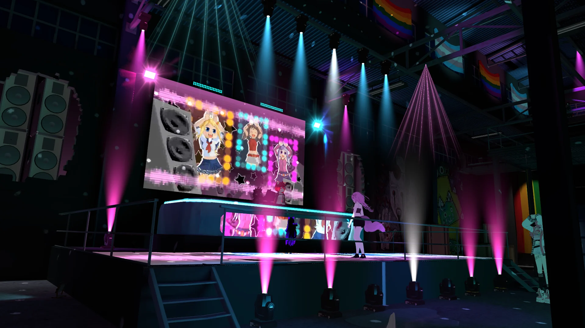
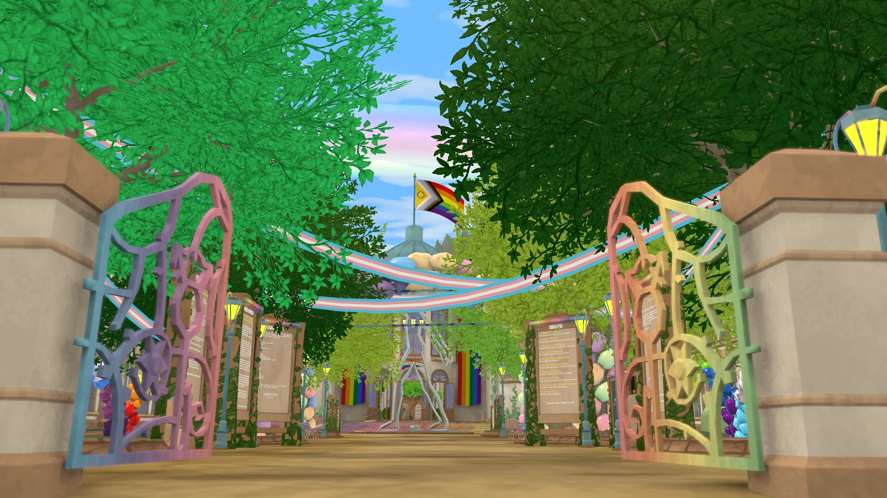
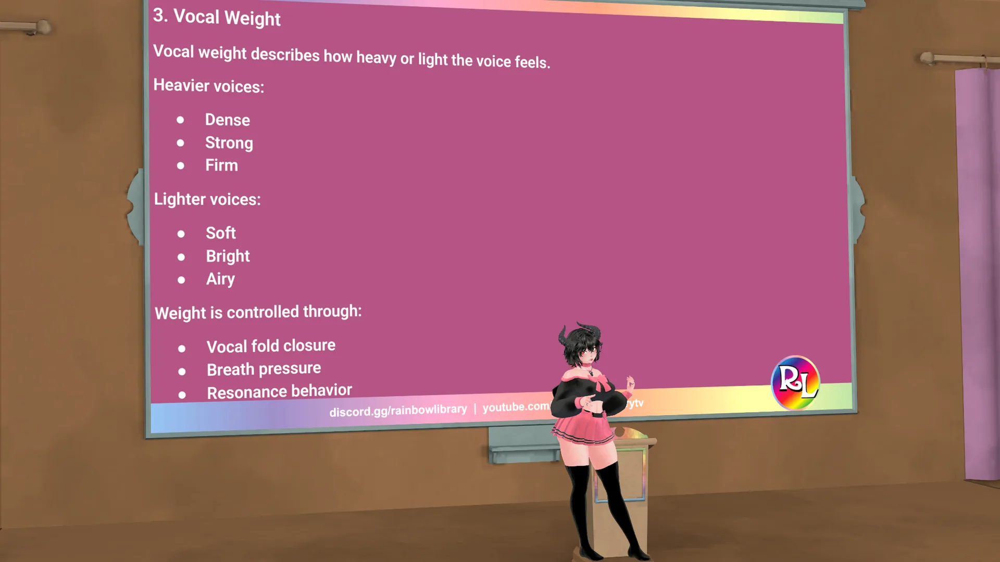
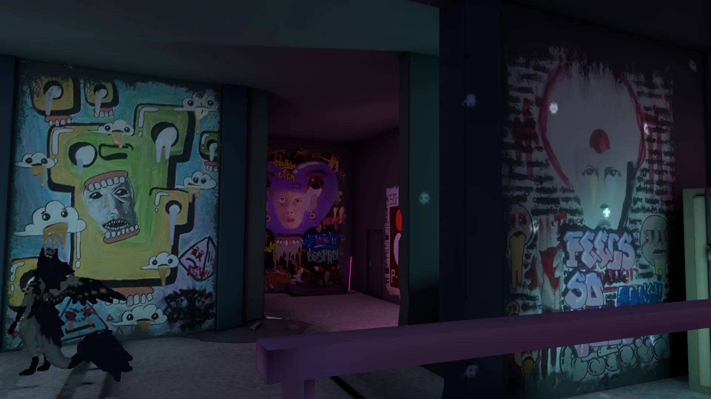
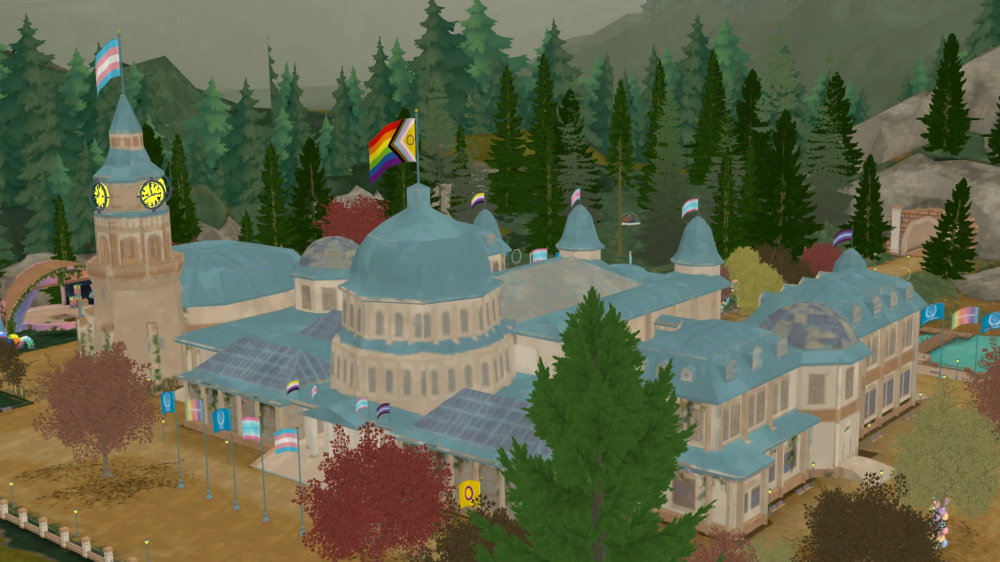

📚
Lectures & Workshops
Community education on LGBTQ+ identity, safety, rights, digital wellbeing, and respectful allyship.
Practical education, support, music, hangouts, and safeguarding programs shaped around the rainbow values.

Community education on LGBTQ+ identity, safety, rights, digital wellbeing, and respectful allyship.
Supportive voice sessions for people exploring presentation, confidence, and self-expression.
Friendly recurring spaces for relaxed conversation, newcomer introductions, and community support.
Creative events that foster music, performance, joy, and confidence in a safe setting.
Clear community rules, active safeguarding, and anti-harassment practices for online spaces.
Social gatherings, lectures, excursions, and meetups that keep the rainbow palette visible and welcoming.

We offer multiple worlds and rooms for the community: commons, lecture halls, gardens, reading areas, performance stages, TV spaces, music rooms, and calm places to talk.
Each space is designed with a purpose: connection, learning, creativity, peer support, or celebration.
The RLAID program provides up to two weeks of food supply for community members in need, funded through community donations and Patreon support.
Rainbow Library treats food security as part of community care: when people are struggling, reliable meals can create breathing room, dignity, and stability.
100% of Patreon donations go directly into the RLAID food program. Donations are used to support community members with practical, immediate food assistance.
Rainbow Library combines peer care with structured education and responsible safeguarding.

Supportive sessions help participants explore resonance, pitch, articulation, presentation, and confidence. The goal is not one perfect voice, but safer experimentation and self-directed expression.

We host accessible lectures on identity, history, allyship, digital safety, rights, and community health so visitors can learn with context and compassion.

Moderation standards, event guidelines, onboarding, and anti-harassment practices help protect the community while keeping spaces open and welcoming.
Our education program can include structured talks, reading lists, discussion formats, citations, guest speakers, and topic sequences that treat LGBTQ+ learning with seriousness.
Coffee hours and host-led introductions help people arrive gently, ask questions, and understand community expectations before joining larger events.
Programs are maintained through community responsibility: planning, moderation, accessibility checks, and consistent follow-through.